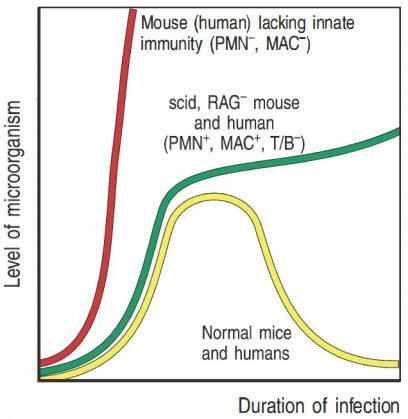
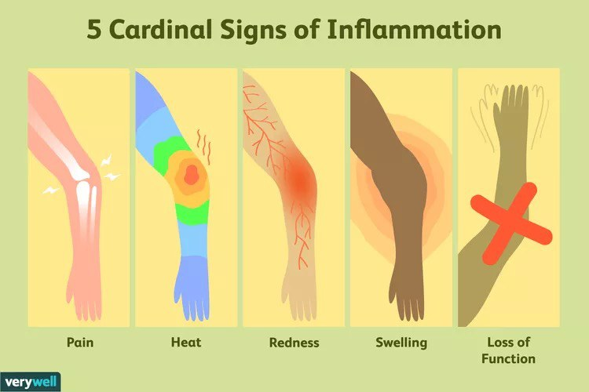
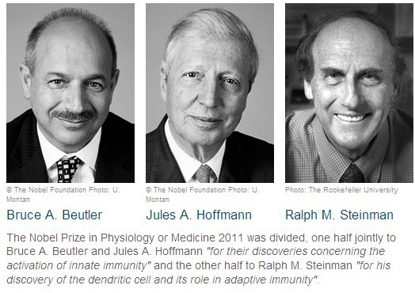
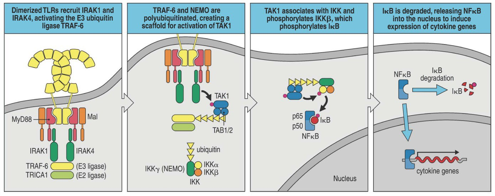
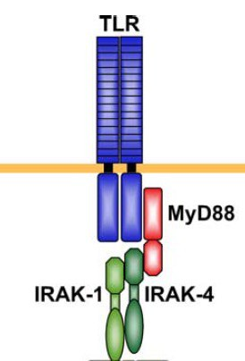
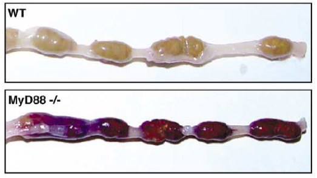
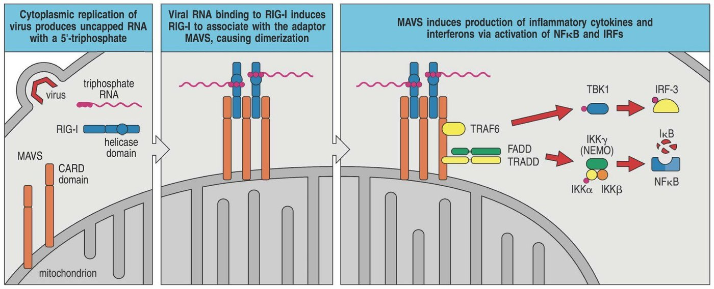
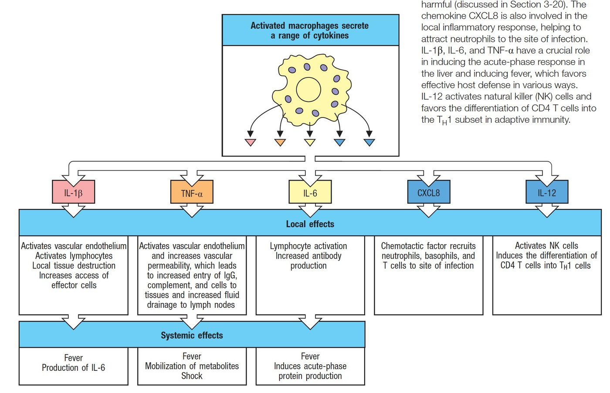
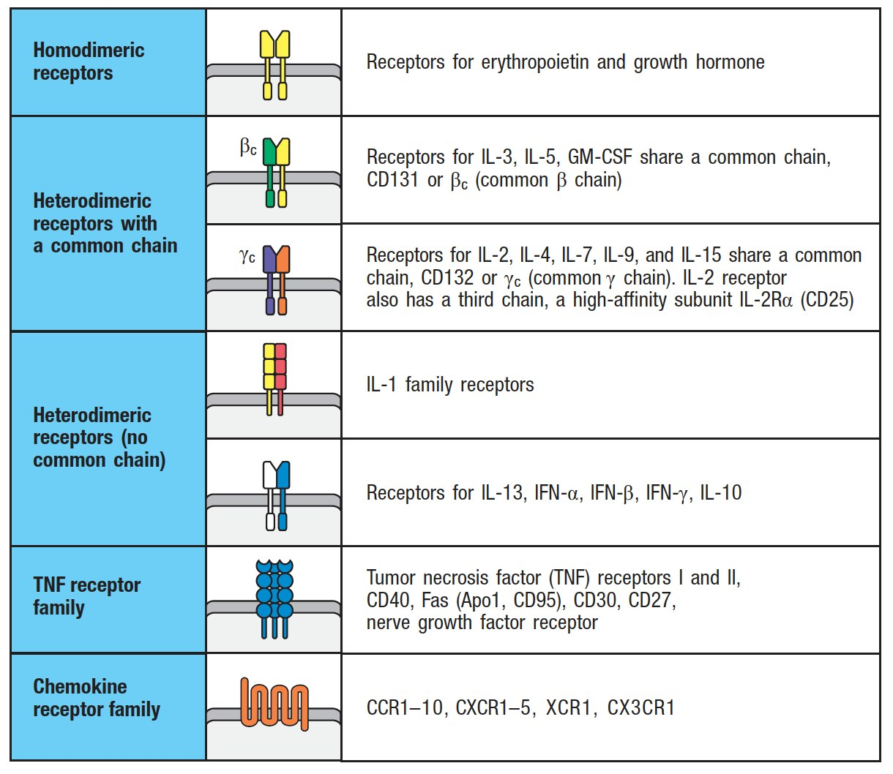
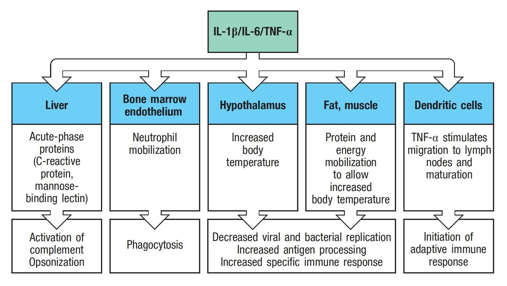

Innate Immunity — Triggers and Sensorsایمنی ذاتی — محرکها و حسگرها
Adaptive immunity takes a week. You would be dead in a week. Everything that keeps you alive in the meantime is innate — and it is not, as it is often taught, a crude preliminary. It is the system that decides whether the adaptive response happens at all, because it supplies signal 2 and signal 3. Part 2 told you a T cell needs permission; this Part is about who grants it.ایمنی اکتسابی یک هفته وقت میبرد. شما ظرف یک هفته مردهاید. هر چه در این میان شما را زنده نگه میدارد ذاتی است — و آنطور که اغلب آموزش داده میشود، مقدمهای خام نیست. سامانهای است که تصمیم میگیرد آیا پاسخ اکتسابی اصلاً رخ دهد، چون سیگنال ۲ و سیگنال ۳ را تأمین میکند. بخش ۲ گفت سلول T به اجازه نیاز دارد؛ این بخش دربارهٔ کسی است که اجازه را میدهد.
By the end of this Part you should be able toدر پایان این بخش باید بتوانید
Give four differences between innate and adaptive immunity — without saying “fast” and “slow” only.چهار تفاوت ایمنی ذاتی و اکتسابی را بگویید — بدون آنکه فقط «سریع» و «کند» بگویید.
List the five steps by which an inflammatory response is triggered, and match each cardinal sign to a mediator.پنج گام برانگیختهشدن پاسخ التهابی را فهرست کنید و هر نشانهٔ اصلی را به یک واسطه وصل کنید.
Define PAMP, DAMP and PRR, and give three examples of each.PAMP، DAMP و PRR را تعریف کنید و برای هر یک سه مثال بزنید.
Match at least six microbial ligands to their TLRs, and say which TLRs sit where.دستکم شش لیگاند میکروبی را به TLRشان وصل کنید و بگویید هر TLR کجا مینشیند.
Draw the chain from TLR to NF-κB and name the adaptor that all but one TLR uses.زنجیرهٔ TLR تا NF-κB را بکشید و آداپتوری را که همهٔ TLRها جز یکی بهکار میبرند نام ببرید.
6.1Innate versus Adaptiveذاتی در برابر اکتسابی
Table 6.1 The two systems comparedجدول ۶.۱ — مقایسهٔ دو سامانه
Innateذاتی
Adaptiveاکتسابی
Timingزمانبندی
Early — minutes to hoursزود — دقیقه تا ساعت
Late — days to a weekدیر — روزها تا یک هفته
What it recognisesچه میشناسد
Not antigen-specific. It recognises general signals generated by infection — molecular patterns shared by whole classes of microbesاختصاصی آنتیژن نیست.سیگنالهای عمومیِ ساختهشده در اثر عفونت را میشناسد — الگوهای مولکولی مشترک میان کل ردههای میکروبی
Antigen-specific — the T-cell receptor and the immunoglobulins of Session 2اختصاصی آنتیژن — گیرندهٔ سلول T و ایمونوگلوبولینهای جلسهٔ ۲
Receptor repertoireرپرتوار گیرنده
Germline-encoded, fixed, a few hundred receptors — you are born with the complete setرمزگذاریشده در ژنوم، ثابت، چند صد گیرنده — با مجموعهٔ کامل به دنیا میآیید
Somatically generated by V(D)J recombination, ~10¹¹ specificitiesسوماتیک ساخته میشود با نوترکیبی V(D)J، حدود 10¹¹ اختصاصیت
Memoryحافظه
Classically none (though “trained immunity” modifies this)کلاسیک ندارد (هرچند «ایمنی آموزشدیده» این را تعدیل میکند)
Yes — the basis of vaccinationدارد — پایهٔ واکسیناسیون
Role in the other systemنقش در سامانهٔ دیگر
Innate immunity provides the third signal — the inflammatory cytokine — that steers adaptive immunity, and the B7 that permits it. The relationship is not sequential; it is instructiveایمنی ذاتی سیگنال سوم — سایتوکاین التهابی — را تأمین میکند که ایمنی اکتسابی را هدایت میکند، و همان B7ی که اجازهاش را میدهد. رابطه، ترتیبی نیست؛ آموزشی است
Fig 6.1Barrier. Skin and mucosa — a wall that keeps almost everything out and costs nothing to maintain.سد. پوست و مخاط — دیواری که تقریباً همهچیز را بیرون نگه میدارد و نگهداریاش هزینهای ندارد.Fig 6.2Sentinels. Macrophages and dendritic cells patrolling the tissue behind the wall, ready within minutes.دیدهبانها. ماکروفاژها و سلولهای دندریتیک که پشت دیوار در بافت گشت میزنند و ظرف چند دقیقه آمادهاند.

Fig 6.3Why both are needed. Normal host (yellow) clears the organism. A host lacking adaptive immunity (SCID/RAG⁻, green) controls it for a while and then cannot finish. A host lacking innate immunity (no neutrophils or macrophages, red) is overwhelmed almost immediately.چرا هر دو لازماند. میزبان طبیعی (زرد) ارگانیسم را پاک میکند. میزبانی که ایمنی اکتسابی ندارد (SCID/RAG منفی، سبز) مدتی مهارش میکند و بعد نمیتواند تمامش کند. میزبانی که ایمنی ذاتی ندارد (بدون نوتروفیل یا ماکروفاژ، قرمز) تقریباً بیدرنگ مغلوب میشود.
6.2What Inflammation Is, and How It Startsالتهاب چیست و چگونه آغاز میشود

Fig 6.4 The five cardinal signs, named by Celsus in the first century and Galen in the second: dolor (pain), calor (heat), rubor (redness), tumor (swelling) and functio laesa (loss of function). Every one of them is now assignable to a molecule, and that is the point of this Part.پنج نشانهٔ اصلی، که سلسوس در سدهٔ اول و جالینوس در سدهٔ دوم نامشان بردند: درد، گرما، قرمزی، تورم و ازدسترفتن عملکرد. اکنون هر یک از آنها به یک مولکول قابلانتساب است، و نکتهٔ این بخش همین است.
Mechanism — the lecturer's five steps, with the sign each one producesمکانیسم — پنج گام مدرّس، با نشانهای که هر گام میسازد
Breach of homeostasis — epithelial barrier damage, pathogen infection, trauma, ischaemia.Note the wording. It is not “infection”; it is a breach of homeostasis. That single choice of word is what allows the same pathway to explain gout, atherosclerosis and infarction as well as sepsis.شکستن هومئوستاز — آسیب سد اپیتلیال، عفونت با پاتوژن، تروما، ایسکمی.به عبارتبندی توجه کنید. «عفونت» نیست؛ شکستن هومئوستاز است. همین یک انتخاب واژه است که میگذارد یک مسیر واحد، نقرس، آترواسکلروز و انفارکتوس را هم مانند سپسیس توضیح دهد.
Innate effectors sense the breach — macrophages and dendritic cells detect DAMPs released by damaged host cells or PAMPs carried by the pathogen.عملگرهای ذاتی شکست را حس میکنند — ماکروفاژ و سلول دندریتیک DAMPهای آزادشده از سلولهای آسیبدیدهٔ میزبان یا PAMPهای حملشده توسط پاتوژن را تشخیص میدهند.
Secretion of cytokines and chemokines by those innate effector cells.This is the amplification step. One macrophage that has seen one bacterium can now recruit thousands of cells. Everything after this point is done by cells that never saw the pathogen.ترشح سایتوکاین و کموکاین توسط همان سلولهای اجرایی ذاتی.این گام تقویت است. یک ماکروفاژ که یک باکتری دیده، اکنون میتواند هزاران سلول را فرا بخواند. هر چه پس از این نقطه رخ میدهد، کار سلولهایی است که هرگز پاتوژن را ندیدهاند.
Cytokines act on the vessels and the brain — TNF causes vasodilation and increased permeability, giving redness, heat and swelling; IL-1 and IL-6 act on the hypothalamus to give fever. Prostaglandins and bradykinin sensitise nociceptors: pain.سایتوکاینها بر رگها و مغز اثر میکنند — TNFگشادی عروق و افزایش نفوذپذیری میدهد، که قرمزی، گرما و تورم میسازد؛ IL-1 و IL-6 بر هیپوتالاموس اثر میکنند و تب میدهند. پروستاگلاندین و برادیکینین گیرندههای درد را حساس میکنند: درد.
Chemokines recruit other immune cells to the affected tissue — neutrophils first, then monocytes. Swelling plus pain plus infiltrate gives loss of function.کموکاینها سلولهای ایمنی دیگر را فرا میخوانند به بافت درگیر — نخست نوتروفیل، سپس مونوسیت. تورم بهعلاوهٔ درد بهعلاوهٔ ارتشاح، ازدسترفتن عملکرد میدهد.
Inflammation does not require a microbeالتهاب به میکروب نیاز ندارد
The same five steps run when there is no pathogen at all. Sterile inflammation is triggered by non-infectious cell injury — infarction, crush injury, chemical burn, crystal deposition — because dying host cells release DAMPs, and a macrophage cannot tell a DAMP-driven emergency from a PAMP-driven one. It responds to both with gain of function: phagocytosis and cytokine secretion.همان پنج گام وقتی هیچ پاتوژنی نیست هم اجرا میشود. التهاب استریل را آسیب سلولی غیرعفونی برمیانگیزد — انفارکتوس، آسیب لهشدگی، سوختگی شیمیایی، رسوب کریستال — چون سلولهای میزبانِ در حال مرگ DAMP آزاد میکنند، و ماکروفاژ نمیتواند اورژانس ناشی از DAMP را از اورژانس ناشی از PAMP تمیز دهد. به هر دو با افزایش عملکرد پاسخ میدهد: فاگوسیتوز و ترشح سایتوکاین.
This is why the inflammasome, which you will meet in Part 7, is central to gout (uric acid crystals), atherosclerosis (cholesterol crystals) and type 2 diabetes (islet amyloid polypeptide) as well as to infection. Sterile inflammation is where most of modern chronic disease lives.به همین سبب اینفلاماسوم، که در بخش ۷ خواهید دید، در نقرس (کریستال اوریک اسید)، آترواسکلروز (کریستال کلسترول) و دیابت نوع ۲ (پلیپپتید آمیلوئید جزایر) به همان اندازهٔ عفونت محوری است. بیشتر بیماریهای مزمن امروزی در التهاب استریل زندگی میکنند.
6.3PAMPs and DAMPs — Non-Self and DangerPAMP و DAMP — غیرخودی و خطر
Name decoder — three acronyms that carry the whole of innate recognitionرمزگشای نام — سه سرواژه که تمام شناسایی ذاتی را حمل میکنند
PAMP
Pathogen-associated molecular patternالگوی مولکولی مرتبط با پاتوژن
A molecule made by microbes and not by us, essential to the microbe so it cannot be discarded: LPS, peptidoglycan, flagellin, lipoteichoic acid, unmethylated CpG DNA, double-stranded RNA. This is the “non-self” signalمولکولی که میکروبها میسازند و ما نمیسازیم، و برای میکروب ضروری است پس نمیتواند دورش بیندازد: LPS، پپتیدوگلیکان، فلاژلین، اسید تیکوئیک، DNACpG متیلهنشده، RNA دورشتهای. این سیگنال «غیرخودی» است
A host molecule that is normally hidden inside a healthy cell and appears outside only when a cell dies badly: ATP, uric acid, HMGB1, mitochondrial DNA, heat-shock proteins, extracellular matrix fragments. This is the “danger” signalمولکول میزبان که بهطور طبیعی درون سلول سالم پنهان است و تنها وقتی سلولی بد بمیرد بیرون میآید: ATP، اوریک اسید، HMGB1، DNA میتوکندریایی، پروتئینهای شوک حرارتی، قطعات ماتریکس خارجسلولی. این سیگنال «خطر» است
PRR
Pattern-recognition receptorگیرندهٔ شناساگر الگو
The sensor that reads them. Germline-encoded — unlike a TCR, it is not made fresh in each cell. Found on the cell surface, in endosomes and free in the cytosolحسگری که آنها را میخواند. رمزگذاریشده در ژنوم — برخلاف TCR، در هر سلول از نو ساخته نمیشود. روی سطح سلول، در اندوزوم و آزاد در سیتوزول یافت میشود
Why the two words exist. The old model was self versus non-self — the immune system attacks what is foreign. That model cannot explain why a sterile infarct causes violent inflammation, or why a transplanted kidney is attacked while a fetus is not. Polly Matzinger's danger model replaced it: the immune system responds to damage, whoever caused it. PAMPs and DAMPs are the two vocabularies of that single question — “is something going badly wrong here?” — and both are read by the same receptors and produce the same cytokines.چرا این دو واژه وجود دارند. مدل قدیمی خودی در برابر غیرخودی بود — سامانهٔ ایمنی به آنچه بیگانه است حمله میکند. آن مدل نمیتواند توضیح دهد چرا انفارکتوس استریل التهاب شدید میسازد، یا چرا کلیهٔ پیوندی مورد حمله قرار میگیرد اما جنین نه. مدل خطرِ پالی متزینگر جایش را گرفت: سامانهٔ ایمنی به آسیب پاسخ میدهد، هر که عاملش باشد. PAMP و DAMP دو واژگان یک پرسش واحدند — «آیا اینجا چیزی بهشدت خراب شده؟» — و هر دو را همان گیرندهها میخوانند و همان سایتوکاینها را میسازند.
Three properties a good PAMP must haveسه ویژگی که یک PAMP خوب باید داشته باشد
Made by microbes, not by us — otherwise the receptor would attack the host.ساختهٔ میکروب، نه ما — وگرنه گیرنده به میزبان حمله میکرد.
Essential to the microbe — LPS is structural, flagellin is needed for motility. A pathogen cannot mutate them away without crippling itself. This is how a fixed, germline receptor keeps up with a rapidly mutating pathogen.برای میکروب ضروری — LPS ساختاری است، فلاژلین برای حرکت لازم است. پاتوژن نمیتواند با جهش از شرشان خلاص شود بیآنکه خودش را فلج کند. اینگونه یک گیرندهٔ ثابت و ژنومی با پاتوژنی که سریع جهش مییابد همگام میماند.
Shared by whole classes of microbes — one receptor for all Gram-negatives, one for all flagellated bacteria. A few hundred receptors cover the microbial world.مشترک میان کل ردههای میکروبی — یک گیرنده برای همهٔ گرممنفیها، یکی برای همهٔ باکتریهای تاژکدار. چند صد گیرنده، دنیای میکروبی را پوشش میدهند.
6.4Toll-like Receptorsگیرندههای شبهتول

Fig 6.5Nobel Prize 2011. One half jointly to Bruce A. Beutler and Jules A. Hoffmann“for their discoveries concerning the activation of innate immunity” — Hoffmann found Toll in Drosophila, Beutler found that the mouse LPS receptor was TLR4. The other half to Ralph M. Steinman“for his discovery of the dendritic cell and its role in adaptive immunity.”نوبل ۲۰۱۱. یکنیمه مشترکاً به بروس بیوتلر و ژول هوفمان«برای کشفهایشان دربارهٔ فعالسازی ایمنی ذاتی» — هوفمان تول را در دروزوفیلا یافت، بیوتلر یافت که گیرندهٔ LPS در موش همان TLR4 است. نیمهٔ دیگر به رالف اشتاینمن«برای کشف سلول دندریتیک و نقش آن در ایمنی اکتسابی.»
Table 6.2 The lecturer's TLR table — the ligand, the organism, the receptorجدول ۶.۲ — جدول TLR مدرّس — لیگاند، ارگانیسم، گیرنده
Microbial componentجزء میکروبی
Found inدر کجا
TLR usedTLR بهکاررفته
LPS (endotoxin)LPS (اندوتوکسین)
Gram-negative bacteriaباکتریهای گرممنفی
TLR4 (with MD-2 and CD14)TLR4 (با MD-2 و CD14)
Diacyl lipopeptidesلیپوپپتیدهای دیآسیل
Mycoplasmaمایکوپلاسما
TLR6/TLR2 heterodimerهتـرودایمر TLR6/TLR2
Triacyl lipopeptidesلیپوپپتیدهای تریآسیل
Bacteria and mycobacteriaباکتریها و مایکوباکتریها
TLR1/TLR2 heterodimerهتـرودایمر TLR1/TLR2
Lipoteichoic acidاسید لیپوتیکوئیک
Group B Streptococcusاسترپتوکوک گروه B
TLR6/TLR2
Peptidoglycanپپتیدوگلیکان
Gram-positive bacteriaباکتریهای گرممثبت
TLR2
Porinsپورینها
Neisseriaنایسریا
TLR2
Lipoarabinomannanلیپوآرابینومانان
Mycobacteriaمایکوباکتریها
TLR2
Flagellinفلاژلین
Flagellated bacteriaباکتریهای تاژکدار
TLR5
CpG DNA (unmethylated)DNACpG (متیلهنشده)
Bacteria and mycobacteriaباکتریها و مایکوباکتریها
TLR9 — endosomalTLR9 — اندوزومی
Not yet definedهنوز تعریفنشده
Uropathogenic bacteriaباکتریهای اوروپاتوژن
TLR11 — functional in mouse; a pseudogene in humansTLR11 — در موش کارآمد؛ در انسان شبهژن
Double-stranded RNARNA دورشتهای
Virusesویروسها
TLR3 — endosomal, and the only TLR that does not use MyD88TLR3 — اندوزومی، و تنها TLRی که MyD88 بهکار نمیبرد
Fig 6.6Where each TLR sits, and why. At the plasma membrane: TLR1/2, TLR2/6, TLR4 (with MD-2) and TLR5 — all reading surface molecules of intact microbes, which are outside the cell. In the endosome: TLR3 (dsRNA), TLR7 (ssRNA) and TLR9 (CpG DNA) — all reading nucleic acids, which only appear once a microbe has been swallowed and broken open.هر TLR کجا مینشیند و چرا. روی غشای پلاسمایی: TLR1/2، TLR2/6، TLR4 (با MD-2) و TLR5 — همه مولکولهای سطحی میکروب سالم را میخوانند که بیرون سلولاند. در اندوزوم: TLR3 (RNA دورشتهای)، TLR7 (RNA تکرشتهای) و TLR9 (DNACpG) — همه اسیدهای نوکلئیک را میخوانند که فقط پس از بلعیدهشدن و شکستهشدن میکروب پدیدار میشوند.
The location is the safety mechanismمکان، همان سازوکار ایمنی است
Nucleic acids are not foreign. Your own DNA and RNA are chemically almost identical to a microbe's, so a receptor for DNA cannot rely on chemistry alone to avoid attacking you. It relies on geography. Nucleic-acid sensors are confined to the endosome, a compartment your own DNA never enters — so anything found there arrived inside something that was swallowed.اسیدهای نوکلئیک بیگانه نیستند. DNA و RNA خود شما از نظر شیمیایی تقریباً با میکروب یکساناند، پس گیرندهای برای DNA نمیتواند تنها به شیمی تکیه کند تا به شما حمله نکند. به جغرافیا تکیه میکند. حسگرهای اسید نوکلئیک به اندوزوم محدودند، بخشی که DNA خودتان هرگز واردش نمیشود — پس هر چه آنجا یافت شود، درون چیزی آمده که بلعیده شده است.
When that geography fails, you get autoimmunity. In systemic lupus erythematosus, immune complexes containing self-DNA are taken into the endosome of a plasmacytoid dendritic cell, where TLR7 and TLR9 read them as viral — and the resulting type I interferon signature is one of the defining laboratory features of the disease. This is also why hydroxychloroquine, which raises endosomal pH and disables these TLRs, is a mainstay of lupus treatment.وقتی آن جغرافیا شکست بخورد، خودایمنی میگیرید. در لوپوس اریتماتوی سیستمیک، کمپلکسهای ایمنی حاوی DNA خودی وارد اندوزوم سلول دندریتیک پلاسماسیتوئید میشوند، جایی که TLR7 و TLR9 آنها را ویروسی میخوانند — و امضای اینترفرون نوع Iِ حاصل، یکی از ویژگیهای آزمایشگاهی تعریفکنندهٔ این بیماری است. به همین سبب هم هیدروکسیکلروکین که pH اندوزوم را بالا میبرد و این TLRها را از کار میاندازد، ستون درمان لوپوس است.
6.5From TLR to NF-κBاز TLR تا NF-κB
Fig 6.7 The TLR chain, drawn on the same template as Fig 2.5 and Fig 4.9. Note the unusual mechanism in the middle: TRAF6 signals by building a polyubiquitin chain that acts as a scaffold, not by phosphorylating anything. Ubiquitin here is a signal, not a death sentence.زنجیرهٔ TLR، روی همان قالب شکل ۲.۵ و شکل ۴.۹. به سازوکار غیرمعمول میانی توجه کنید: TRAF6 با ساختن زنجیرهٔ پلییوبیکوئیتینی که نقش داربست دارد پیام میدهد، نه با فسفریلهکردن چیزی. یوبیکوئیتین اینجا یک پیام است، نه حکم مرگ.

Fig 6.8 The same four steps as the textbook draws them, panel by panel, ending with IκB degraded and the p50/p65 NF-κB dimer walking into the nucleus to switch on the cytokine genes.همان چهار گام، آنگونه که کتاب درسی پانلبهپانل میکشد، و پایان با تجزیهٔ IκB و ورود دایمر p50/p65NF-κB به هسته برای روشنکردن ژنهای سایتوکاینی.
Absence proves function — the MyD88 knockout mouseنبودش کارش را ثابت میکند — موش فاقد MyD88
MyD88 is the adaptor that binds the TIR domain of the TLR and recruits IRAK-4, IRAK-1 and TRAF-6. It is used by every TLR except TLR3, and the knockout mouse shows what that means:MyD88 آداپتوری است که به دومین TIRِ TLR میچسبد و IRAK-4، IRAK-1 و TRAF-6 را فرا میخواند. هر TLRی جز TLR3 آن را بهکار میبرد، و موش فاقد آن نشان میدهد این یعنی چه:
MyD88⁻/⁻ mice have no response to LPS at all — the single cleanest demonstration that this adaptor is the bottleneck.موشهای MyD88 منفی اصلاً به LPS پاسخ نمیدهند — تمیزترین نمایش اینکه این آداپتور گلوگاه است.
The lecturer's stronger claim: MyD88 is essential to all inflammatory signalling pathways — it is also the adaptor for the IL-1 receptor family, whose cytoplasmic domain is a TIR domain too.ادعای قویتر مدرّس: MyD88 برای همهٔ مسیرهای پیامرسانی التهابی ضروری است — آداپتور خانوادهٔ گیرندهٔ IL-1 هم هست، که دومین سیتوپلاسمیاش نیز TIR است.
A splice variant, MyD88s, lacks part of the protein and acts as a natural down-regulator of the response — the same self-limiting design as SOCS and CTLA-4.یک واریانت اسپلایسی بهنام MyD88s بخشی از پروتئین را ندارد و بهعنوان تنظیمکنندهٔ کاهشی طبیعی پاسخ عمل میکند — همان طراحی خودمحدودکنندهٔ SOCS و CTLA-4.
The surprising result. Rakoff-Nahoum and colleagues (Cell 2004) showed that MyD88⁻/⁻ mice are not merely infection-prone — their intestines bleed after injury and fail to repair. The conclusion in the paper's title is the point: recognition of commensal microflora by Toll-like receptors is required for intestinal homeostasis. TLR signalling is not only a danger alarm; it is a continuous, low-level conversation with your own microbiota that maintains the gut epithelium. Switching off inflammation entirely is not health.نتیجهٔ شگفتآور. راکوف-ناهوم و همکاران (سل ۲۰۰۴) نشان دادند موشهای MyD88 منفی صرفاً مستعد عفونت نیستند — رودهشان پس از آسیب خونریزی میکند و ترمیم نمیشود. نتیجهگیری در عنوان مقاله، همان نکته است: شناسایی فلور همزیست توسط گیرندههای شبهتول برای هومئوستاز روده لازم است. پیامرسانی TLR تنها زنگ خطر نیست؛ گفتوگویی پیوسته و کمشدت با میکروبیوتای خودتان است که اپیتلیوم روده را حفظ میکند. خاموشکردن کامل التهاب، سلامت نیست.

Fig 6.9 The receptor-proximal complex: the TLR in the membrane, MyD88 docked on its TIR domain, and IRAK-4 and IRAK-1 assembled beneath — the structure sometimes called the Myddosome.کمپلکس نزدیک گیرنده: TLR در غشا، MyD88 نشسته بر دومین TIRش، و IRAK-4 و IRAK-1 که در زیر مونتاژ شدهاند — ساختاری که گاهی مایدوزوم نامیده میشود.

Fig 6.10 The experiment. Above, wild-type intestine after injury; below, MyD88⁻/⁻ intestine — dark with blood. Without TLR signalling the epithelium cannot repair itself.آزمایش. بالا، رودهٔ وحشیتیپ پس از آسیب؛ پایین، رودهٔ MyD88 منفی — تیره از خون. بدون پیامرسانی TLR، اپیتلیوم نمیتواند خودش را ترمیم کند.
6.6Sensing the Cytosol: RIG-I-like Receptorsحسکردن سیتوزول: گیرندههای شبهRIG-I

Fig 6.11RIG-I binds viral RNA bearing an uncapped 5′-triphosphate — a chemical signature our own cytoplasmic mRNA does not carry. It then associates with the adaptor MAVS on the mitochondrial outer membrane, which nucleates two arms: TBK1 → IRF3 → type I interferon, and IKK → NF-κB → inflammatory cytokines.RIG-I به RNA ویروسی دارای ۵ٔ-تریفسفات بدون کلاهک میچسبد — امضایی شیمیایی که mRNA سیتوپلاسمی خودمان ندارد. سپس با آداپتور MAVS روی غشای بیرونی میتوکندری همراه میشود و دو بازو را میسازد: TBK1 → IRF3 → اینترفرون نوع I و IKK → NF-κB → سایتوکاینهای التهابی.
The lecturer sets up this section with a precise problem. TLR3, TLR7 and TLR9 can detect viral RNA and DNA — but they sit in the endosome, so they interact primarily with material that has entered by endocytosis. They are blind to what is happening in the cytoplasm of an already-infected cell, which is precisely where a replicating virus lives.مدرّس این بخش را با مسئلهای دقیق آغاز میکند. TLR3، TLR7 و TLR9 میتوانند RNA و DNA ویروسی را تشخیص دهند — اما در اندوزوم مینشینند، پس عمدتاً با موادی برهمکنش دارند که با اندوسیتوز وارد شدهاند. نسبت به آنچه در سیتوپلاسم سلولِ ازپیشآلوده میگذرد کورند، و دقیقاً همانجاست که ویروسِ در حال تکثیر زندگی میکند.
The solution is a second family of sensors, free in the cytosol: the RIG-I-like receptors (RLRs, also called RLHs — RIG-I-like helicases). Named after retinoic acid-inducible gene I, they carry an RNA helicase-like domain that binds viral RNA directly in the cytoplasm.راهحل، خانوادهٔ دومی از حسگرهاست که آزاد در سیتوزولاند: گیرندههای شبهRIG-I (که هلیکازهای شبهRIG-I هم نامیده میشوند). نامشان از ژن I القاشونده با رتینوئیک اسید است و دومینی شبههلیکاز RNA دارند که مستقیماً در سیتوپلاسم به RNA ویروسی میچسبد.
Remember it asاینطور بهخاطر بسپارید
Three addresses, three sensor families.Outside the cell → surface TLRs.Inside a vesicle → endosomal TLRs.Free in the cytosol → RLRs for RNA, cGAS–STING for DNA, and NLRs for everything else (Part 7). If a question asks which sensor detects a given pathogen, first ask where in the cell that pathogen is.سه نشانی، سه خانوادهٔ حسگر.بیرون سلول ← TLRهای سطحی.درون وزیکول ← TLRهای اندوزومی.آزاد در سیتوزول ← RLRها برای RNA، cGAS–STING برای DNA، و NLRها برای باقی (بخش ۷). اگر سؤالی پرسید کدام حسگر پاتوژنی را تشخیص میدهد، نخست بپرسید آن پاتوژن کجای سلول است.
6.7The Effectors: Cytokines of Innate Immunityعملگرها: سایتوکاینهای ایمنی ذاتی
The sensors have fired. What comes out? Cytokines — and the same molecules you studied in Parts 4 and 5, now seen from the innate end.حسگرها شلیک کردهاند. چه بیرون میآید؟ سایتوکاینها — و همان مولکولهایی که در بخشهای ۴ و ۵ خواندید، اینبار از سوی ذاتی.

Fig 6.12 What an activated macrophage secretes, with local effects above and systemic effects below. IL-1β and TNF-α activate vascular endothelium and raise permeability; IL-6 drives the acute-phase response and antibody production; CXCL8 is the chemotactic factor that brings in neutrophils, basophils and T cells; IL-12 activates NK cells and pushes CD4 cells towards Th1. That last box is signal 3 — the innate cell choosing the adaptive response.ماکروفاژ فعال چه ترشح میکند، با اثرهای موضعی در بالا و اثرهای سیستمیک در پایین. IL-1β و TNF-α اندوتلیوم عروقی را فعال و نفوذپذیری را بالا میبرند؛ IL-6 پاسخ فاز حاد و تولید آنتیبادی را میراند؛ CXCL8 عامل کموتاکتیکی است که نوتروفیل، بازوفیل و سلول T را میآورد؛ IL-12 سلول NK را فعال و سلول CD4 را بهسوی Th1 میراند. آن جعبهٔ آخر همان سیگنال ۳ است — سلول ذاتی که پاسخ اکتسابی را انتخاب میکند.

Fig 6.13 Cytokines are classified by receptor structure. Homodimeric receptors (erythropoietin, growth hormone); heterodimeric with a common chain — the βc family (IL-3, IL-5, GM-CSF) and the γc family of §4.4 (IL-2, IL-4, IL-7, IL-9, IL-15, IL-21, with IL-2Rα = CD25 as the third chain); heterodimeric with no common chain (IL-1 family; IL-13, IFN-α, IFN-β, IFN-γ, IL-10); the TNF receptor family (TNFRI/II, CD40, Fas/CD95, CD30, CD27, NGF receptor); and the chemokine receptor family (CCR1–10, CXCR1–5, XCR1, CX3CR1).سایتوکاینها بر پایهٔ ساختار گیرنده ردهبندی میشوند. گیرندههای هومودایمری (اریتروپویتین، هورمون رشد)؛ هتـرودایمری با زنجیرهٔ مشترک — خانوادهٔ βc (IL-3، IL-5، GM-CSF) و خانوادهٔ γcِ بخش ۴.۴؛ هتـرودایمری بدون زنجیرهٔ مشترک (خانوادهٔ IL-1؛ IL-13، IFN-α، IFN-β، IFN-γ، IL-10)؛ خانوادهٔ گیرندهٔ TNF (TNFRI/II، CD40، Fas/CD95، CD30، CD27، گیرندهٔ NGF)؛ و خانوادهٔ گیرندهٔ کموکاین.

Fig 6.14 What IL-1β, IL-6 and TNF-α do to the whole body. Liver: acute-phase proteins — CRP and mannose-binding lectin (the lectin pathway of Session 2). Bone marrow endothelium: neutrophil mobilisation. Hypothalamus: fever. Fat and muscle: protein and energy mobilisation — the cachexia of chronic disease. Dendritic cells: TNF drives their migration to lymph nodes and their maturation, which is how they come to express the B7 of §2.2.IL-1β، IL-6 و TNF-α با کل بدن چه میکنند. کبد: پروتئینهای فاز حاد — CRP و لکتین متصلشونده به مانوز (مسیر لکتینی جلسهٔ ۲). اندوتلیوم مغز استخوان: بسیج نوتروفیل. هیپوتالاموس: تب. چربی و عضله: بسیج پروتئین و انرژی — کاشکسی بیماری مزمن. سلولهای دندریتیک: TNF مهاجرتشان به غدد لنفاوی و بلوغشان را میراند، و اینگونه است که به بیان B7 بخش ۲.۲ میرسند.
Where Part 7 beginsبخش ۷ از کجا آغاز میشود
Look again at Fig 6.12 and notice something. TNF-α, IL-6 and CXCL8 are secreted by the ordinary route — made with a signal peptide, pushed through the endoplasmic reticulum and Golgi, released. But IL-1β is not. It has no signal peptide, it is made as an inactive precursor, and it cannot leave the cell by the normal door. NF-κB — the endpoint of every pathway in this Part — writes the pro-form and stops.دوباره به شکل ۶.۱۲ نگاه کنید و چیزی را ببینید. TNF-α، IL-6 و CXCL8 از راه معمول ترشح میشوند — با پپتید سیگنال ساخته میشوند، از شبکهٔ آندوپلاسمی و گلژی میگذرند و آزاد میشوند. اما IL-1β نه. پپتید سیگنال ندارد، بهشکل پیشسازِ غیرفعال ساخته میشود و نمیتواند از در معمول بیرون برود. NF-κB — نقطهٔ پایان هر مسیر این بخش — پیشساز را مینویسد و متوقف میشود.
So the most powerful inflammatory cytokine in the body sits inside the cell, fully transcribed and completely inert, waiting for a second signal. That machine is the inflammasome, and you have seen its logic before.پس قدرتمندترین سایتوکاین التهابی بدن، درون سلول مینشیند، کاملاً رونویسیشده و بهکلی بیاثر، منتظر سیگنال دوم. آن ماشین، اینفلاماسوم است، و منطقش را پیشتر دیدهاید.